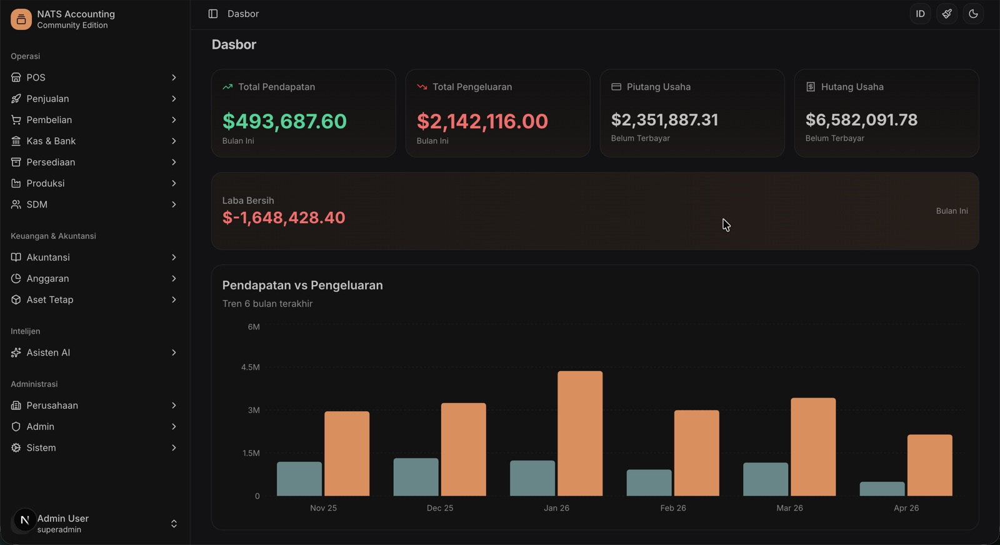

Accounting
Double-entry journals, chart of accounts, ledgers, trial balance, and financial statements in real time.
- P&L, balance sheet, cash flow, ratios
- Tax summary & default accounts
- Beginning balance setup wizard
NATS democratizes enterprise software. Manage accounting, inventory, sales, purchasing, POS, payroll, production, and AI insights—without lock-in or enterprise price tags.

Core modules
Each module shares master data, permissions, and reporting so finance, warehouse, and front-line teams work from one source of truth.
Double-entry journals, chart of accounts, ledgers, trial balance, and financial statements in real time.
Multi-warehouse stock control with products, categories, UoM, pricing, and movement tracking.
End-to-end order-to-cash and procure-to-pay with invoices, payments, shipments, and returns.
Fast cashier UI with sessions, hold orders, discounts, barcode-friendly search, and receipts.
Employees, attendance, leave, salary structures, payroll periods, and printable payslips.
Built-in chat agent with configurable providers to query business context and accelerate decisions.
BOMs, production orders, material issues, receipts, WIP, and cost analysis for light manufacturing.
Fixed asset register with depreciation, plus budgets by department/project and variance reports.
Role-based access control, users, company settings, document numbering, and integration outbox.
Product tour
From executive dashboards to cashier checkout—NATS is designed for daily operations, not just configuration screens.
Proprietary ERPs often force trade-offs between cost, customization, and data ownership. NATS is built for organizations that want modern UX and full control of their stack.
Interactive preview
Switch modules below for a lightweight preview of how NATS surfaces operational data. For full functionality, install the app locally.
Illustrative preview only — figures are sample data for demonstration.
Technical overview
NATS uses a modern full-stack TypeScript architecture with clear module boundaries, server actions, and a PostgreSQL system of record.
Locale-aware App Router pages, shadcn/ui components, and responsive layouts.
Server actions and services enforce validation, permissions, and domain rules.
Accounting, inventory, sales, POS, HR, production, assets, and budgeting services.
PostgreSQL via Prisma, file storage drivers, and outbox workers for integrations.
Get started
Follow the full guide for configuration details, seed data, and Docker options.
git clone https://github.com/maziyank/nats.git
cd nats
npm install
cp .env.example .env
# set DATABASE_URL, then:
npx prisma generate
npx prisma migrate dev
npx prisma db seed
npm run dev
Open http://localhost:3000 and sign in with the seeded admin credentials.
Star the repository, try the install path, and open issues or pull requests to shape the roadmap.